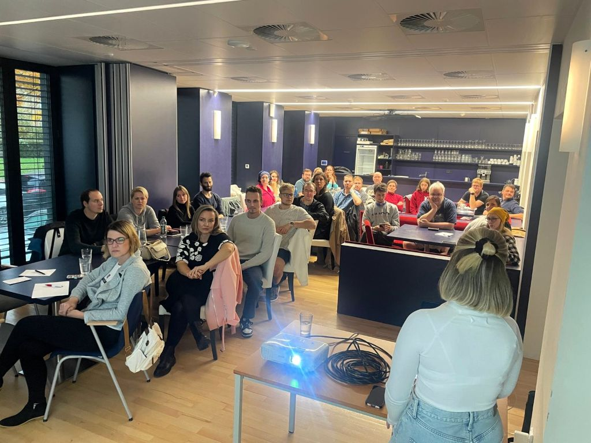
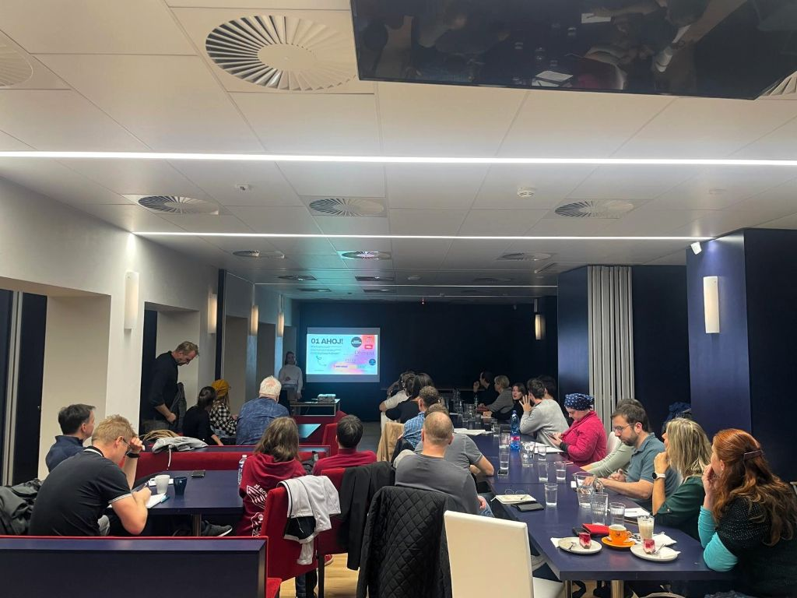
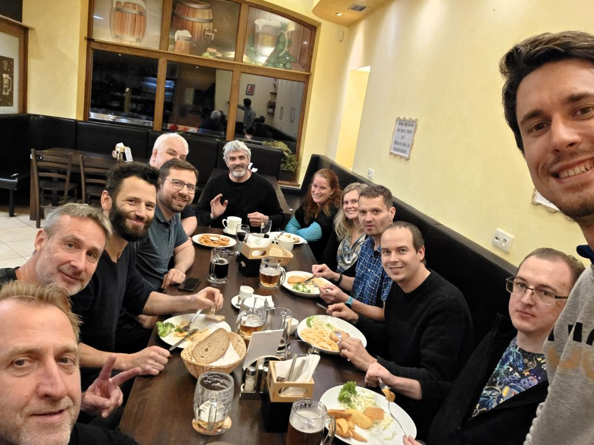

Marketing pro Gen Z a Inovace v PovleÄŤenĂ: Reportáž z Klubu PodnikavcĹŻ v KuĹ™imi
StĹ™edeÄŤnĂ veÄŤer 15. Ĺ™Ăjna 2025 patĹ™il v KuĹ™imi dĂky SandĹ™e NaÄŹovĂ© a dalšĂm organizátorĹŻm z Klubu PodnikavcĹŻ networkingu a vzdÄ›lávánĂ. Ve SpoleÄŤenskĂ©m a kulturnĂm centru se pod hlaviÄŤkou tohoto klubu sešla komunita mĂstnĂch podnikatelĹŻ, aby naÄŤerpala novĂ© znalosti a propojila svĂ© byznysovĂ© svÄ›ty. VeÄŤer byl rozdÄ›len na dvÄ› části – odbornou pĹ™ednášku a volnĂ© navazovánĂ kontaktĹŻ.

Jak zaujmout v online svÄ›tÄ›? KlĂÄŤem je autentickĂ˝ obsah
Prvnà část veÄŤera patĹ™ila AneĹľce MargholdovĂ©, specialistce na sociálnĂ mĂ©dia a obsahovĂ˝ marketing. JejĂ pĹ™ednáška se zaměřila na jedno z nejpalÄŤivÄ›jšĂch tĂ©mat souÄŤasnosti: jak v dnešnĂ uspÄ›chanĂ© dobÄ› efektivnÄ› komunikovat se zákaznĂky, zejmĂ©na s mladšà generacĂ Z.
AneĹľka poutavÄ› vysvÄ›tlila, jak generace Z vnĂmá online prostor a proÄŤ je pro nÄ› klĂÄŤová autenticita. PodÄ›lila se o praktickĂ© tipy, jak vyuĹľĂt dostupnĂ© nástroje k budovánĂ dosahu a jak tvoĹ™it obsah, kterĂ˝ zaujme pozornost v prvnĂch vteĹ™inách. Dotkla se takĂ© stále populárnÄ›jšà spolupráce s influencery a pĹ™iblĂĹľila obvyklĂ© podmĂnky, za jakĂ˝ch taková partnerstvĂ fungujĂ.

Od AI po revoluÄŤnĂ povleÄŤenĂ
Po informaÄŤnÄ› nabitĂ© pĹ™ednášce následovala druhá, nemĂ©nÄ› dĹŻleĹľitá část veÄŤera – volnĂ˝ networking. Dvanáctka podnikatelĹŻ z regionu zaplnila prostor ĹľivĂ˝mi diskuzemi. ProbĂrala se aktuálnĂ tĂ©mata jako marketingovĂ© strategie, práce s mladĂ˝mi talenty, ale i nevyhnutelnĂ˝ fenomĂ©n umÄ›lĂ© inteligence a jejĂ dopady na byznys.
NejvÄ›tšà rozruch však vzbudil Adam Sedláček se svĂ˝m inovativnĂm projektem. Jeho prototyp ruÄŤnÄ› vyrábÄ›nĂ©ho povleÄŤenĂ, kterĂ© se neshrnuje z peĹ™in, okamĹľitÄ› zaujal a strhla se kolem nÄ›j vlna zájmu.
Tento moment skvÄ›le ilustroval sĂlu podobnĂ˝ch setkánà – nejenĹľe se zde sdĂlĂ know-how, ale rodĂ se zde i pĹ™ĂleĹľitosti pro zcela novĂ© a neotĹ™elĂ© nápady, kterĂ© mohou najĂt svĂ© prvnĂ fanoušky a zákaznĂky.

ĹĂjnovĂ© setkánĂ v KuĹ™imi opÄ›t potvrdilo, Ĺľe kombinace kvalitnĂho obsahu a prostoru pro neformálnĂ diskuze je receptem na Ăşspěšnou akci, která posouvá mĂstnĂ podnikatelskou komunitu vpĹ™ed. TěšĂme se na dalšà pokraÄŤovánĂ!
↠Zpět na přehled článků